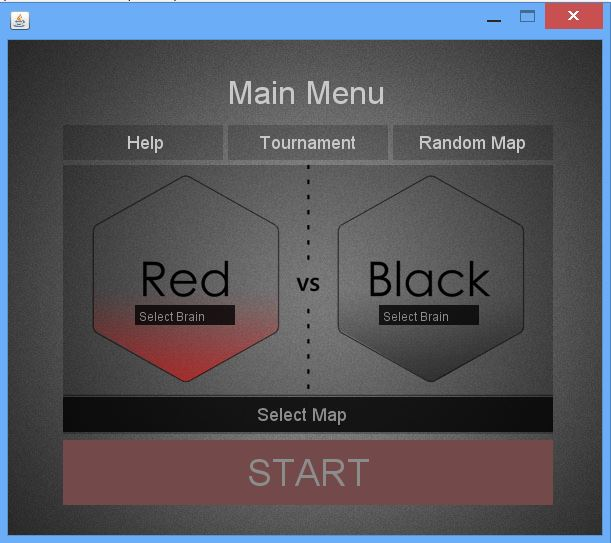

Welcome! We're glad you're here, We've been waiting for you. Spend a few minutes going through this guide to learn some AntGameSimulator basics. We will introduce you to a number of useful tutorials to make it easier to battle the ants.
The simulator comes with several files, to lauch the simulator open the antgame.jar file. In the brains and world directories you will find some examples of the brains and world files.
Let's get started, first launch the simulator. You should have a window open as shown below.
